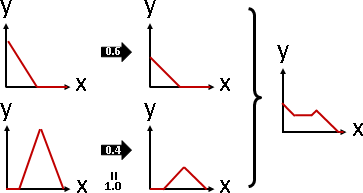

Weighted Average
Weighted Average
兩數，依照比例（權重），各取一部分，加總，得到「加權平均值」，介於兩數之間。
設定各種比例，得到兩數之間的各種數字。
x = x1 * w + x2 * (1-w) let 0 <= w <= 1

推廣成多個數。「加權平均值」介於最大值和最小值之間。
x = x1 * w1 + x2 * w2 + ... + xn * wn let w1 + ... + wn = 1

推廣到高維度。其實只是每個維度分開處理。「加權平均值」介於凸包之間。
[x] [x1] [x2] [xn] [y] = [y1] * w1 + [y2] * w2 + ... + [yn] * wn let w1 + ... + wn = 1 [z] [z1] [z2] [zn] that is x = x1 * w1 + x2 * w2 + ... + xn * wn y = y1 * w1 + y2 * w2 + ... + yn * wn z = z1 * w1 + z2 * w2 + ... + zn * wn

比例可以推廣成任意數，額外除以任意數總和即可。
(w1) (w2) (w3)
a b c x1 * a + x2 * b + x3 * c
x = x1 * ----- + x2 * ----- + x3 * ----- = ------------------------
a+b+c a+b+c a+b+c a + b + c
a1 an
x = x1 * ------------- + ... + xn * -------------
a1 + ... + an a1 + ... + an
x1 * a1 + ... + xn * an
= -----------------------
a1 + ... + an

數字可以是任何事物。「加權平均值」無所不在。
主角 ｜加權平均值 ------------------- 質點 ｜重心 溶液 ｜混和濃度 機率 ｜期望值 座標點 ｜凸包範圍 函數點 ｜線性內插 線性代數｜線性組合 三原色 ｜人類眼中的彩色
最後留個問題給讀者：平均值是加權平均值的特例。在什麼情況下，加權平均值是平均值？
Weighted Average of Floating Values
真實世界當中，數字通常不精準，數字通常有誤差。引入機率分布的概念，讓每個數字擁有浮動範圍，是個不錯的想法。經典的設定方式，是常態分布。每個數字套用常態分布的加權平均值，我不清楚是否有人研究。
如果只有兩個數字，而且權重都是0.5，加權平均值就是摺積。值得一提的是，兩個常態分布的摺積仍是常態分布，平均數、變異數很好推算：
http://www.tina-vision.net/docs/memos/2003-003.pdf
Weighted Average of Functions
多個函數的加權平均值，還是一個函數。
知名範例是「高斯混合模型」、「Neville's Algorithm」。